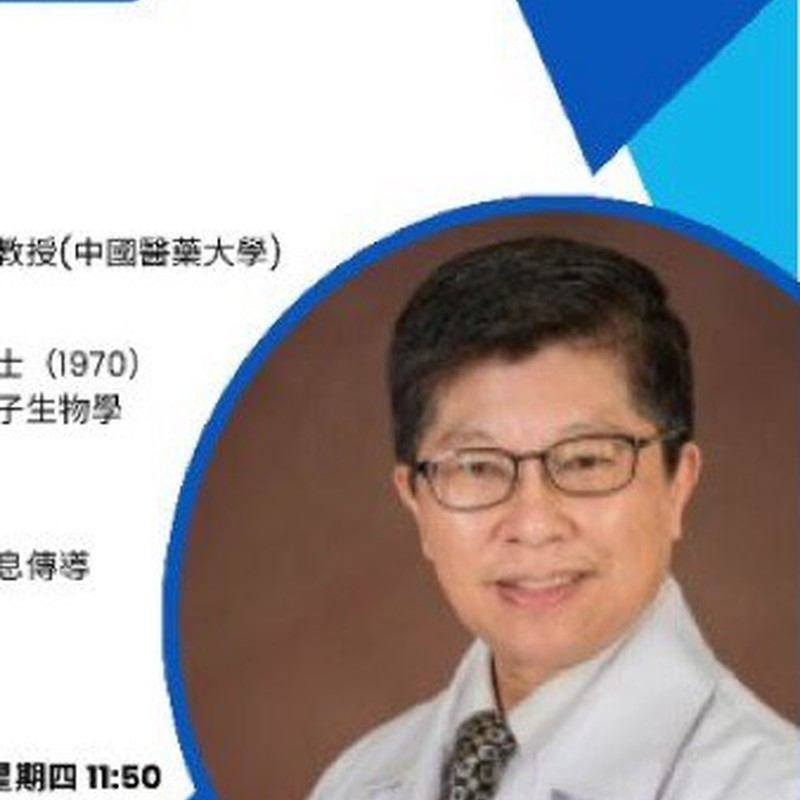
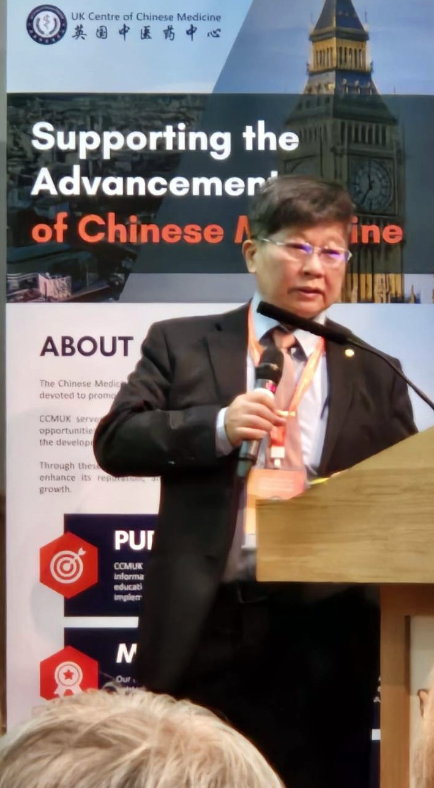
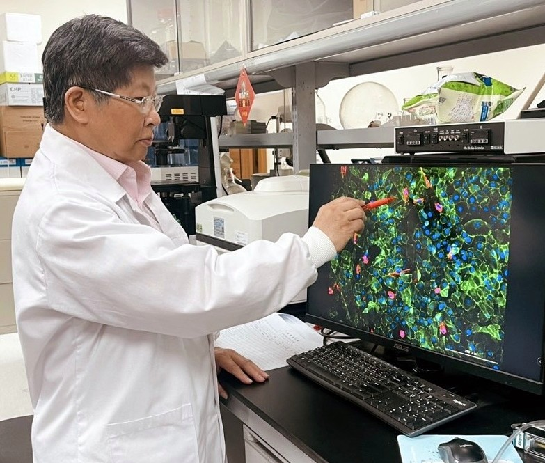
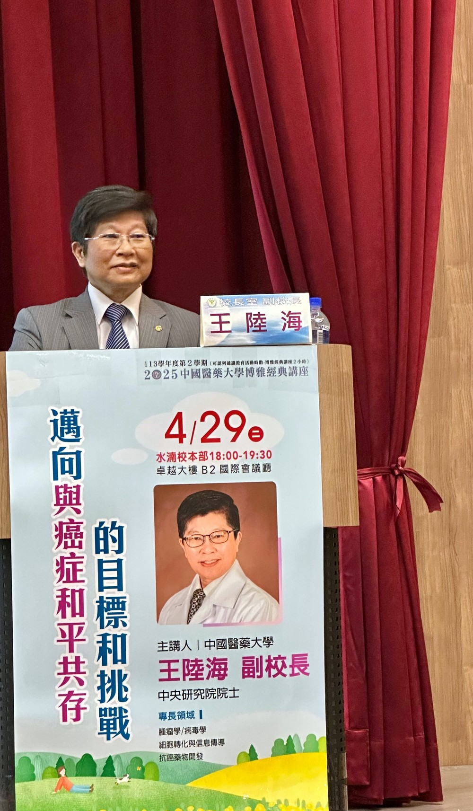
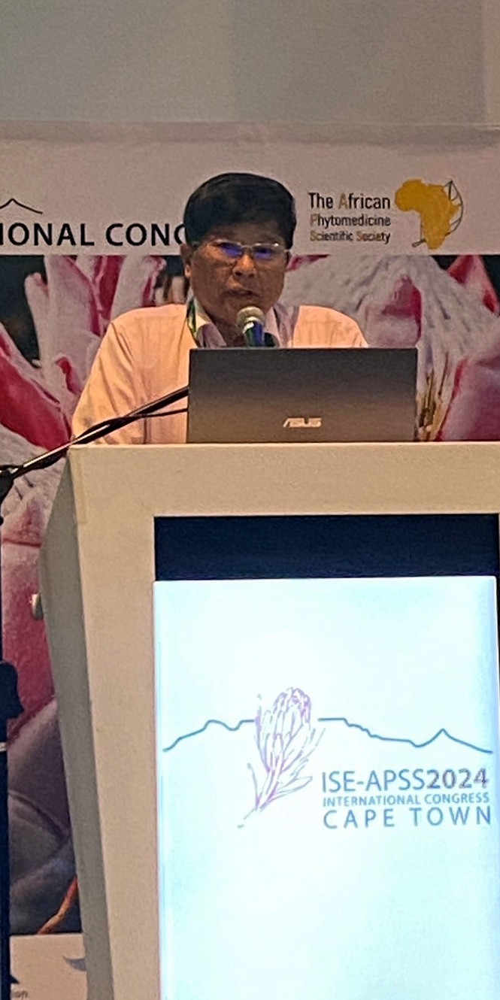
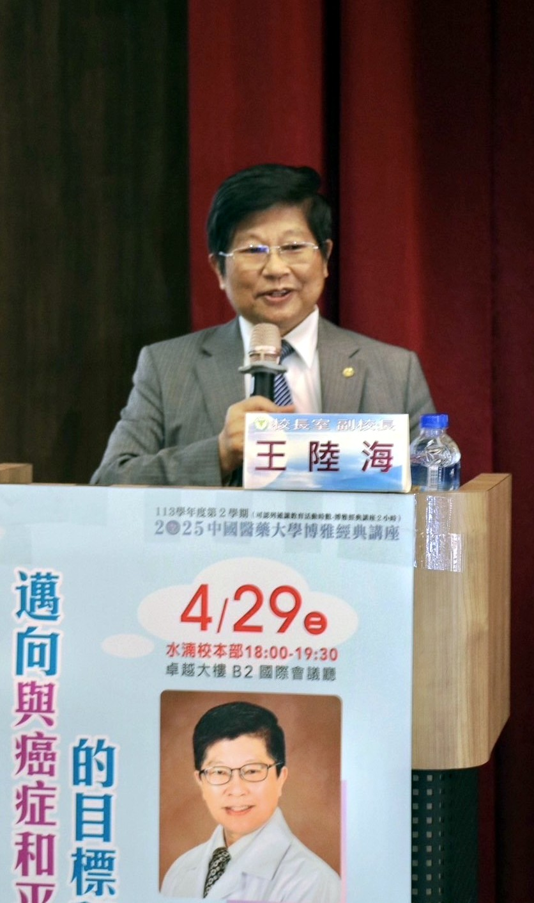

研發團隊
王陸海 院士
中央研究院院士 · 中國醫藥大學副校長 · 中醫藥研究中心主任

基本資料
- 現職：中國醫藥大學副校長
- 榮譽：中央研究院院士、世界科學院院士
- 職務：中醫藥研究中心主任；中西醫結合研究所講座教授
- 專長：腫瘤學、細胞轉化與信息傳導、病毒學、抗癌藥物開發
關於王陸海院士
王陸海院士長期投入腫瘤學與細胞訊息傳導研究，並積極推動中西醫結合與傳統醫藥的現代科學應用。現任中國醫藥大學副校長，同時擔任中醫藥研究中心主任與中西醫結合研究所講座教授。
其研究團隊在三陰性乳癌相關機制、傳統醫藥與轉譯醫學等領域持續發表與推廣；並多次代表學校參與國際學術會議，深化台、英、韓、泰、南非等地合作交流。
學歷
- 1970 國立臺灣大學動物系學士
- 1976 美國加州柏克萊大學分子生物學研究所博士
經歷亮點
- 中央研究院院士
- 中國醫藥大學副校長
- 中醫藥研究中心主任
- 中西醫結合研究所講座教授
研究專長
🔬
腫瘤學與訊息傳導
聚焦細胞轉化、信息傳導與腫瘤相關機制研究。
🧬
中西醫結合
推動傳統醫藥與現代醫學的對話、教育與轉譯應用。
📋
轉譯與國際合作
參與生醫轉譯選拔、跨國聯合實驗室與國際 ethno-pharmacology 會議。
學術活動與報導精選
以下摘錄公開新聞與活動，僅供了解研發背景；不代表產品具有醫療效能。
| 主題 | 說明 |
|---|
| 傳統醫療與 AI |
中國醫藥大學與泰國瑪希敦大學合辦「2024 傳統醫學與人工智慧應用聯合研討會」。
中央社訊息 |
| 生醫轉譯獎 |
研究團隊獲第 2 屆「2024 NBRP Pitch Day」新藥類傑出團隊獎。
中央社訊息 |
| 國際合作 |
與韓國慶熙大學聯合研究實驗室揭牌，深化傳統醫學合作。
中央社訊息 |
| 英國會議 |
赴倫敦參與「2024 中醫與人類健康會議」，拓展國際影響力。
中央社訊息 |
| ISE-APSS 2024 |
赴南非開普敦參加第 23 屆國際傳統民族藥理學會，獲大會創新獎。
中央社訊息 |
| 媒體報導 |
自由時報等曾報導國衛院／相關研究在三陰性乳癌機制與存活相關發現（研究脈絡，非產品宣稱）。 |
更多個人頁與影音：
個人介紹站 ·
中國醫大新聞 ·
講座影音 01 ·
講座影音 02
活動與現場紀實






研發理念
「以嚴謹基礎研究與中西醫結合視野，讓傳統醫藥的現代應用被清楚理解、正確溝通。」
—— 整理自王陸海院士公開學術活動與講座主題
與產品的關係說明
STEP 1
學術研究
長期腫瘤學、訊息傳導與傳統醫藥相關研究
STEP 2
國際交流
英、韓、泰、南非等地學術合作與會議
STEP 3
技轉脈絡
包裝標示：醫學大學研發技轉產品
STEP 4
食品標示
成分、營養、注意事項完整公開於產品頁
對成分或背景有問題？
歡迎來信，由仕康企業協助回覆。
與我們聯絡
本頁僅說明學術背景與公開活動，不代表產品具有醫療效能；身體不適請就醫。